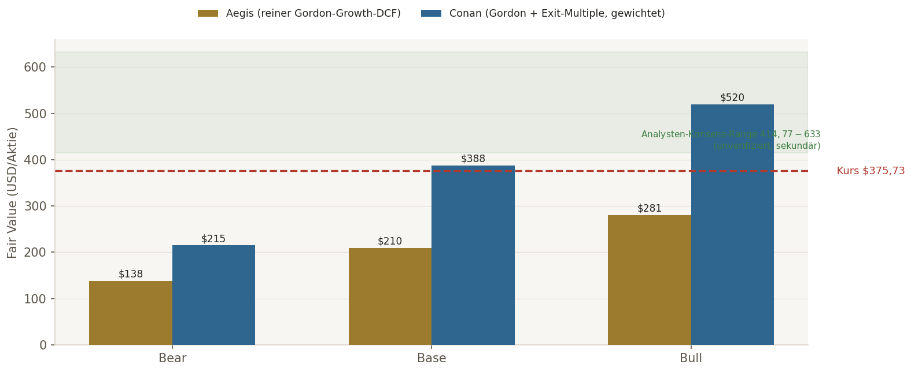
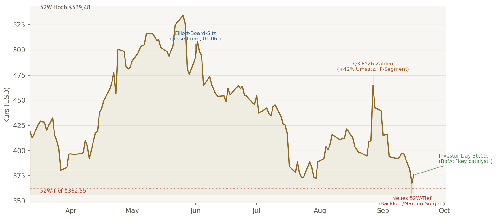
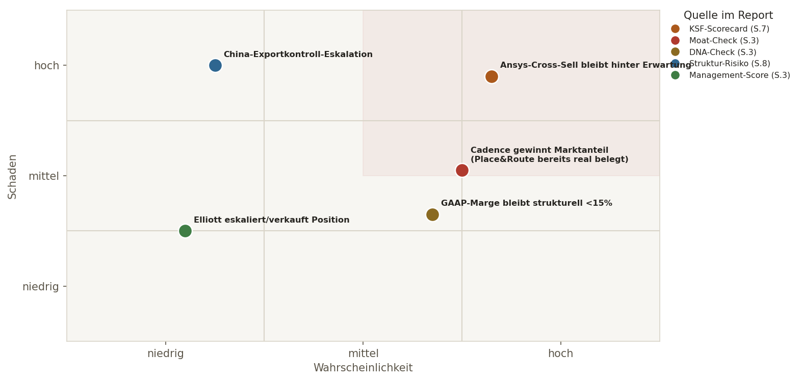

Das operative Geschäft. Synopsys dominiert gemeinsam mit Cadence den EDA-Markt (Chip-Design-Software, ~80-85% gemeinsamer Marktanteil) und hat am 17.07.2025 für $35 Mrd. Ansys übernommen — die größte Fusion der Branchengeschichte, die EDA (Chip-Design) mit CAE (Multiphysics-Simulation) verbindet. Q3 FY26: Umsatz $2,477 Mrd. (+42% YoY, davon $711 Mio. allein Ansys), organisches EDA-Wachstum 8,5%. FY26-Guidance $9,69-9,74 Mrd., Non-GAAP-Op-Margin ~41,5%. Term Loans aus der Ansys-Finanzierung bereits vollständig getilgt — Deleveraging läuft schneller als angekündigt.
Der Kurs. -30,4% vom 52W-Hoch, aktuell nahe dem 52W-Tief ($362,55, erreicht am 15.09.). Belastend: die riesige GAAP/Non-GAAP-Lücke (GAAP-Op-Margin FY26-Guidance nur ~10,4%), ein leicht rückläufiger Backlog ($11,4 Mrd. → $10,9 Mrd., teils durch die Processor-IP-Divestiture erklärt) und generell steigende Zinsen. Peer Cadence (CDNS) bewegte sich am selben Tag ähnlich, aber schwächer als SNPS im Tagesverlauf — teils sektorweiter, teils SNPS-spezifischer Druck.
Die Sondersituation. Seit März 2026 hält Elliott Investment Management eine Multi-Milliarden-Beteiligung, seit 01.06.2026 mit Board-Sitz (Jesse Cohn) via Cooperation Agreement — Fokus auf Margen/Profitabilität. Cadence kontert die Ansys-Fusion strukturell mit einem eigenen $3,16-Mrd.-Zukauf (Hexagon Design & Engineering). Investor Day am 30.09.2026 gilt laut BofA als "key catalyst" — in nur zwei Wochen.
Der Cross-Check-Befund. Alle drei unabhängigen Perspektiven (Aegis, JJ, Conan) konvergieren auf BEOBACHTEN, Agent Score 6-7/10 — ungewöhnlich einig für eine derart komplexe Sondersituation. Der eigentliche Fund dieser Runde ist kein Rating-Dissens, sondern ein Daten-Integritäts-Fund: JJ nannte trotz aktivem Web-Search einen um +54% zu hohen Kurs. Details Seite 10.
BEOBACHTEN
Score 6,5/10, kein Kauf vor Investor Day · Tier 2/3
BEOBACHTEN
Score 6/10 · ⚠ Kursbasis fehlerhaft, siehe S.10 · Tier 3
BEOBACHTEN
Score 7/10, SEC-primärquellen-gestützt · Tier 2
Synopsys hat einen der stärksten Software-Moats überhaupt (4/4 in allen drei Analysen: Mission-Critical-EDA, jahrzehntelange Switching-Costs, jetzt erweitert um Ansys' Multiphysics-Simulation) und beschleunigt aktuell sein Deleveraging schneller als kommuniziert. Aber: der DNA-Check zeigt aktuell nur K-Basis 1/4 — nicht als Qualitätsurteil, sondern weil $26,8 Mrd. Goodwill aus dem Ansys-Deal ROIC/ROE/EPS-Wachstum auf der pro-forma-Basis real unter die Schwellenwerte drückt. Die DCF-Bewertung ist bei einer FCF-Basis von nur $2,6 Mrd. gegen eine EV von ~$78,6 Mrd. fast vollständig terminalwert-getrieben (TV-Anteil 68-76% je Modell) — jede Punktschätzung ist mit Vorsicht zu genießen. Der Investor Day am 30.09.2026 muss liefern: organisches Wachstum jenseits der Ansys-Konsolidierung, echte Cross-Sell-Kennzahlen statt reiner Umsatzaddition, einen glaubwürdigen Margen-Pfad.
4/4-Moat in allen drei Analysen, Mission-Critical-EDA+CAE-Kombination, Deleveraging schneller als angekündigt (Term Loans bereits getilgt), Backlog trotz Rückgang weiterhin $10,9 Mrd., kein Going-Concern-Flag.
K-Basis nur 1/4 (ROIC/ROE/EPS-CAGR real unter Schwelle, nicht nur Datenlücke), GAAP-Op-Margin nur ~10,4%, Management-Score nur 1-1,5/7, TA klar bearish, Cadence kontert strukturell mit eigenem Multiphysics-Zukauf.
Investor Day 30.09.2026 (neues Long-Term-Modell erwartet), Backlog-Entwicklung (organisch vs. Ansys), Cadence-Hexagon-Integration als Gegenspieler, China-Exportkontroll-Risiko, Elliotts weiteres Verhalten (Halten/Ausbau/Exit).
BEOBACHTEN. Kein Kauf vor dem Investor Day. Bei Neuaufnahme danach: max. Tier 2/3, keine Tier-1-Position vor bewiesener Integrationstransparenz.
| Kriterium | Schwelle | Ist-Wert (pro-forma nach Ansys) | Status |
|---|---|---|---|
| K-Kriterien (Gatekeeper) | |||
| ROIC | >20% | Unbereinigt nur ~1,7-2,0% (Goodwill $26,8 Mrd. bläht Kapitalbasis auf), bereinigt (Non-GAAP-Basis) ~8-10% — beide klar unter Schwelle | ❌ Verfehlt |
| Operativer Leverage | Ja/Nein | Ja — Q3 FY26 GAAP-Op.Income +116% YoY bei Umsatz +42% YoY (teils M&A-Konsolidierungseffekt) | ✅ Erfüllt |
| EPS-CAGR (5J) | ≥12% | GAAP durch Ansys-Amortisation/Integrationskosten stark verzerrt und aktuell rückläufig (FY24 $9,25 → FY25 $8,07 → FY26e $3,84-4,08) — kein sauberer 5J-CAGR belegbar | ❌ Verfehlt/N/V |
| ROE | >15% | Unbereinigt ~3-4%, bereinigt (Non-GAAP) ~9-10% — beide unter Schwelle | ❌ Verfehlt |
| E-Kriterien | |||
| Op. Margin (GAAP-TTM) | ≥20% | ~10,4% (FY26-Guidance) — Non-GAAP dagegen ~41,5% (Amortisation erworbener Intangibles, SBC, Integrationskosten erklären die Lücke) | ❌ Verfehlt (GAAP) |
| Revenue-CAGR (5J) | ≥8-10% | Reported ~18% (stark M&A-getrieben) · organisch ex-Ansys ~9,9% — Ersatzkriterium erfüllt | ✅ Erfüllt (organisch) |
| Net Debt/EBITDA | <2,0x | ~1,5-1,6x (Cash $3,6 Mrd., Debt-Principal $10,1 Mrd., Term Loans bereits vollständig getilgt) | ✅ Erfüllt |
| Capex/Umsatz | ≤5% | ~2,3% (FY26-Guidance $225 Mio. / $9,715 Mrd.) | ✅ Erfüllt |
| SBC-Infection-Check | <15% Umsatz / <2% Verwässerung p.a. | SBC/Umsatz 9M FY26 ~10,0% (unter Schwelle) · Share Count +24% seit Okt. 2024 — aber einmalig durch Ansys-Aktienausgabe + NVIDIA-Private-Placement, nicht laufende SBC-Verwässerung | 🟡 SBC ok, Deal-Verwässerung hoch |
DNA-Urteil: K 1/4 · E 3/4. Kein Substanzproblem im Sinne einer schlechten Firma, sondern eine reale, primärquellenbelegte Verzerrung durch den $35-Mrd.-Ansys-Deal: Goodwill und Amortisation drücken ROIC/ROE/EPS-Wachstum auf der pro-forma-Basis strukturell unter die Schwellenwerte. Alle drei unabhängigen Analysen (Aegis, JJ, Conan) kommen unabhängig auf dasselbe K 1/4-Bild — ein starkes Konvergenz-Signal.
EDA ist Mission-Critical (Design-Sign-off), enorme Switching-Costs durch jahrzehntelange Tool-Integration. Ansys-Fusion erweitert das Bundle um Multiphysics-Simulation — strukturell moat-stärkend, aber kurzfristig integrationsriskant. Primärquellenbelegte Nuance (EU-Fusionsentscheidung): Synopsys hat in einem Teilsegment (Place&Route) real Marktanteil an Cadence verloren (~60-70%→~40-50% seit 2018) — ein echter, wenn auch begrenzter Moat-Decay-Hinweis.
Guidance-Hit-Rate als einziger klarer Pluspunkt. ROIC-Trend, Reinvestitionsrendite, Buyback-Timing, M&A-Qualität und Share-Count-Trend alle negativ oder nicht belegbar — v.a. wegen der Deal-Verwässerung (+24% Aktien) und der noch unbewiesenen Ansys-Integration. Elliott-Board-Sitz seit 01.06.2026 als teils Qualitäts-, teils Warnsignal eingeordnet (siehe Seite 8).
| Periode | Umsatz | YoY | Ansys-Anteil |
|---|---|---|---|
| FY21 | 4.204 | — | — |
| FY25 | 7.054 | +12% | — |
| Q3 FY26 | 2.477 | +42% | 711 (davon) |
| FY26e (Guidance) | 9.690-9.740 | ~+37-38% | ~2.980 (davon) |
Organisches EDA-Wachstum ex-Ansys/ex-Divestitures ca. 8,5-9,9% — der Großteil des reported Wachstums 2026 ist M&A-Konsolidierungseffekt, kein organischer Hypergrowth.
| Zeitpunkt | Backlog | Kommentar |
|---|---|---|
| FY25-Ende | $11,4 Mrd. | vor Processor-IP-Divestiture |
| Q3 FY26 | $10,9 Mrd. | Leicht rückläufig, teils durch Divestiture erklärt |
Einordnung: Der Rückgang ist nicht dramatisch, aber ein Beobachtungspunkt für den Investor Day — Management muss zeigen, dass der organische Backlog trägt, nicht nur der Ansys-Zufluss.
| Fälligkeit | Betrag | Kupon | Risiko |
|---|---|---|---|
| 2027 | $1,0 Mrd. | 4,55% | 🟡 Erhöht (Zinsumfeld ~5%) |
| 2028 | $1,0 Mrd. | 4,65% | 🟡 Erhöht |
| 2030 | $2,0 Mrd. | 4,85% | 🟢 Unkritisch (weit) |
| 2032 / 2035 / 2055 | $1,5/$2,4/$2,1 Mrd. | 5,00%/5,15%/5,70% | 🟢 Unkritisch (weit) |
Cash $3,6 Mrd., Net Debt ~$6,5 Mrd., Term Loans bereits vollständig getilgt, keine Revolver-Ziehung. GAAP-EBIT/Interest-Coverage nur ~1,6x (dünn), Non-GAAP-Coverage ~6,9x (solide) — Refinanzierungsrisiko 🟡 MITTEL, nicht KRITISCH.
Verwässerungs-Wasserfall (Rigor-Punkt 43): entfällt ersatzlos. Keine Wandelanleihen, keine wandelbaren Preferred-Aktien, keine signifikanten Warrants gefunden. Die Aktien-Verwässerung durch den Ansys-Deal (+24% seit Okt. 2024, ~30 Mio. neue Aktien + $2,0 Mrd. NVIDIA-Private-Placement) ist ein bereits abgeschlossenes, einmaliges Ereignis, vollständig im aktuellen Share-Count enthalten — kein offener Wasserfall-Trigger für die Zukunft.
Divestiture-Check: Verkauf der Processor-IP-Sparte (ARC-V/ARC CPU/DSP/NPU-IP) an GlobalFoundries (angekündigt 14.01.2026, Closing erwartet 2. Halbjahr 2026) brachte $440 Mio. Netto-Erlös in 9M FY26 — strategische Fokussierung auf EDA/CAE/Interface-IP, marginaler Umsatzeffekt (~$40 Mio. in der FY26-Guidance reflektiert).
| Bein | Beta | WACC | Methode | Bear-FV | Base-FV | Bull-FV | TV-Anteil EV |
|---|---|---|---|---|---|---|---|
| Aegis | 1,15 | 10,10% | Reiner Gordon-Growth | $138 | $210 | $281 | 68-76% |
| JJ | 1,11 | 9,82%* | nicht ausgeführt (Methodik-Verzicht) | — | — | — | — |
| Conan | 1,23 | 10,50% | Gordon + Exit-Multiple, gewichtet | $200-230 | $375-400 | $500-540 | 54% (Gordon) / >75% (Exit) |
*JJs WACC-Rechnung basiert auf einer nachweislich falschen Kursbasis ($577,92 statt real $375,73, siehe Seite 10) und wird für die Synthese nicht verwendet — JJ selbst verzichtete bewusst auf eine vollständige DCF-Punktschätzung ("um Scheingenauigkeit zu vermeiden"), was in der Rückschau richtig war.
Bei einer FCF-Basis von nur $2,6 Mrd. (FY26-Guidance) gegen eine Enterprise Value von ~$78,6 Mrd. muss fast der gesamte Unternehmenswert aus weit in der Zukunft liegendem Wachstum kommen — Aegis' reiner Gordon-Growth-Ansatz liegt bei 68-76% TV-Anteil, Conans Exit-Multiple-Ansatz sogar über 75%. Reverse-DCF (Aegis): um den aktuellen Kurs zu rechtfertigen, müsste SNPS 5 Jahre lang ~21,3% p.a. FCF-Wachstum liefern (bei 3% Terminal-g) — das liegt spürbar über dem Durchschnitt selbst des eigenen Bull-Szenarios (~12,8%). Der Markt preist damit einen aggressiveren Silicon-to-Systems-Erfolg ein, als selbst die optimistische Aegis-Schätzung unterstellt. Konsequenz: reiner DCF ist hier eher eine Leitplanke als eine Punktschätzung — Peer-Vergleich und der Investor Day selbst sind die verlässlicheren nächsten Datenpunkte.
Laut sekundärer Recherche (Conan, nicht über Twelve Data verifizierbar — Statistics-Endpunkt gesperrt) liegt der Analysten-Konsens bei ca. $544,97 (Range $414,77-$633), was +48% Upside implizieren würde. Das weicht von Aegis' eigenem DCF-Base-Case ($210) um weit mehr als die 25-30%-Warnschwelle ab. Aegis-Einordnung: Ein reiner Cashflow-DCF ohne vollen Ansys-Synergie-Case ist für ein frisch fusioniertes, noch unbewiesenes Bundle-Geschäft systematisch zu konservativ — der Analysten-Konsens preist wahrscheinlich einen erfolgreichen Cross-Sell UND eine Multiple-Erholung nach dem Investor Day ein. Beide Extreme sind als Leitplanken zu verstehen, die Wahrheit liegt vermutlich näher an Conans gemischtem Ansatz ($375-400).

Einordnung: Der aktuelle Kurs ($375,73) liegt zwischen Aegis' konservativem Base-Case ($210) und Conans gemischtem Base-Case ($388) — praktisch identisch mit Conans Modell, deutlich über Aegis' reinem Gordon-Growth-Ansatz. Diese Streuung ist selbst der wichtigste Befund: bei so hoher Terminal-Value-Sensitivität ist die einzelne DCF-Zahl weniger aussagekräftig als die Bandbreite. Der Kurs liegt aktuell klar unter der Bull-Zone beider Modelle und unter der Analysten-Konsens-Range — für eine Neuaufnahme wäre das rein bewertungstechnisch kein schlechter Einstiegspunkt, aber die K-Basis-1/4-Verzerrung (Seite 3) und die TA-Schwäche (Seite 9) sprechen gegen ein sofortiges Handeln vor dem Investor Day.
Alle drei unabhängigen Analysen (Aegis-Synthese aus JJ/Conan) kommen auf ein fast identisches Bild — starke Konvergenz zwischen zwei unabhängig dispatchten KIs bei derselben Faktoren-Auswahl.
| Key Success Factor | SNPS-Positionierung | Status |
|---|---|---|
| KI-native/agentische Design-Flows | Synopsys.ai/DSO.ai, Kooperationen mit Microsoft/AMD/NVIDIA für autonome Design-Workflows, bis zu 50x schnellere RTL-Verifikation in Kundenpilots genannt | ✅ DEFENSIV |
| Foundry-Zertifizierungen (TSMC/Samsung/Intel) | Enge Partnerschaften für 2nm/Angstrom-Nodes, 3DIC Compiler, Advanced-Packaging-Design | ✅ DEFENSIV |
| Cross-Sell-Integration EDA+CAE ohne Kundenverlust | Erstes gemeinsames Produkt (Multiphysics Fusion) gelauncht, Referenzkunden (NVIDIA, Cisco, MediaTek, Samsung) genannt — aber belastbare Retention-/Cross-Sell-Kohorten fehlen noch | 🟡 IN ARBEIT/UNGEPRÜFT |
| Reaktion auf Cadences Gegenzug (Hexagon-Zukauf) | Cadence hat mit eigenem $3,16-Mrd.-Zukauf (Closing 23.02.2026) eine Gegenplattform aufgebaut — Wettbewerb strukturell verschärft, Ausgang offen | 🟡 IN ARBEIT/UNGEPRÜFT |
| Backlog-Qualität/Sichtbarkeit | $10,9 Mrd., robust, aber leicht rückläufig (Seite 4) — organischer Anteil noch nicht sauber isoliert | 🟡 IN ARBEIT/UNGEPRÜFT |
| Bilanzdisziplin/Deleveraging nach Mega-M&A | Term Loans bereits vollständig getilgt, Net Debt/EBITDA ~1,5-1,6x — schneller als ursprünglicher 2-Jahres-Plan | ✅ DEFENSIV |
3 von 6 Faktoren stehen auf 🟡 — genau die Punkte, die auch das Kill-Sheet (Seite 10) als Stop-These-Trigger führt und die die DCF-Bewertung (Seite 5) so terminalwert-abhängig machen. Kein Faktor steht auf ❌ — das Gesamtbild bleibt defensiv-mit-offenen-Fragen, nicht kritisch. Der Investor Day am 30.09.2026 ist der natürliche Termin, an dem mindestens der Cross-Sell- und der Backlog-Faktor von 🟡 auf ✅ oder ❌ kippen sollten.
| Datum | Event | Relevanz |
|---|---|---|
| 30.09.2026 | Investor Day | Von BofA als "key catalyst" benannt — neues Long-Term-Modell inkl. Ansys-Synergien, Margen-Pfad, organisches Wachstumsziel erwartet |
| ~Anfang Dez. 2026 (geschätzt) | Q4-FY26-Earnings | Offizielles Datum noch nicht bestätigt — nächster harter Datenpunkt für Backlog/Organik |
| 2. Halbjahr 2026 | Closing Processor-IP-Verkauf an GlobalFoundries | Bereinigt Portfolio weiter Richtung EDA/CAE/Interface-IP-Kern |
Cadence hat am 23.02.2026 die Übernahme von Hexagons Design & Engineering-Geschäft (inkl. MSC Software) abgeschlossen — eine direkte, primärquellenbelegte Reaktion auf Synopsys' Ansys-Fusion, mit erwartetem 2026er-Umsatzbeitrag von ca. $160 Mio. Das reduziert die Wahrscheinlichkeit, dass Synopsys-Ansys den gesamten "Silicon-to-Systems"-Profitpool unangefochten kontrolliert — beide Anbieter bauen jetzt parallel Multiphysics-/Digital-Twin-Plattformen aus. Zusätzlich, primärquellenbelegt (EU-Fusionsentscheidung): Synopsys hat im Teilsegment Place&Route bereits real Marktanteil an Cadence verloren (~60-70%→~40-50% seit 2018, während Cadence von ~30-40%→~40-50% stieg) — ein konkreter, nicht nur hypothetischer Beleg für begrenzten Moat-Decay in einem Subsegment.
China-SAMR genehmigte die Ansys-Fusion am 14.07.2025 unter Auflagen (Bestandsverträge chinesischer Kunden müssen weiter bedient werden, keine erzwungene Bündelung). China-Umsatz 9M FY26 ca. $707 Mio. — relevant, aber nicht dominierend. Synopsys' eigene FY26-Guidance setzt ausdrücklich voraus, dass es keine weitere Verschärfung der Export-/Entity-List-Beschränkungen gibt — ein latentes, nicht unter eigener Kontrolle stehendes Risiko für die gesamte EDA-Branche.
| Datum | Person | Transaktion | Einordnung |
|---|---|---|---|
| 01.09.2026 | Aart de Geus (Executive Chair, Gründer) | Verkauf 49.641 Aktien, ca. $21,38 Mio. | Kein Kaufsignal, aber 10b5-1-Kontext — nicht these-killend |
| 28.08./31.08.2026 | Aart de Geus | Weitere planmäßige Verkäufe | Routine im selben Zeitraum |
| seit 01.06.2026 | Jesse Cohn (Elliott, neuer Director) | Board-Sitz via Cooperation Agreement | Kein Insider-Kauf im klassischen Sinn, aber aktivistische Beteiligung als Signal (siehe Seite 3) |
Kein positives Insider-Signal für eine Neuaufnahme — Gründer/Executive Chair verkauft planmäßig, keine Netto-Käufe von Insidern gefunden.

| Kurs vs. SMA200 | $375,73 vs. $446,92 | Klar unter SMA200 |
| 6M-Trend | -30,4% vom 52W-Hoch | Bearish |
| RSI(14) | 38,71 → 34,56 (fallend) | Schwach, noch nicht extrem überverkauft |
| MACD | -8,47, Signal -3,76, Hist. -4,71 | Bearish |
| Bollinger | Unter Mittelband ($405,15), nahe unterem Band ($360,07) | Nahe unterem Band |
| OBV-Trend (letzte Tage) | Klar negativ | Verkaufsdruck (Distribution) |
| ATR(14) / ATR% | $15,25 / ~4,1% | Erhöht (Sizing reduzieren) |
Klar BEARISH
Kurs nahe 52W-Tief, aber (noch) kein klassisches Extrem-Oversold-Signal. Keine technische Bodenbildung erkennbar.
Bewertung: teils attraktiv (Kurs zwischen Aegis-Base und Conan-Base, siehe S.6)
Technik: klar bearish, kein Bestätigungssignal
Konsequenz: kein Timing-Argument FÜR einen sofortigen Einstieg — spricht für "abwarten bis Investor Day", nicht für "jetzt zugreifen"
JJ (Gemini) nannte in Schritt 0 einen aktuellen Kurs von $577,92 und eine 52W-Range von $405-$830 — beide eindeutig falsch. Twelve Data (autoritative Live-Quelle) und Conans unabhängige Recherche stimmen dagegen fast exakt überein ($375,73 / $362,55-$539,48). Marktkapitalisierung, abgeleiteter Share-Count und alle darauf aufbauenden DCF-Sanity-Check-Werte von JJ wurden für diese Synthese verworfen. Dies ist ein eigenständiger, dokumentierter Beleg dafür, dass aktives Search-Grounding nicht vor Halluzinationen auf der grundlegendsten Kennzahl schützt — vergleichbar mit dem RMBS-CFO-Namen-Fund vom 10.09.2026, dieses Mal auf dem Kurs selbst statt auf einem Nebenfakt. Konsequenz: Twelve Data bleibt ausnahmslos die Referenz für Kurs-/TA-Daten, jede KI-genannte Kurszahl wird vor Übernahme dagegen geprüft.
| Termin | Was beobachten | Positives Signal | Warnsignal |
|---|---|---|---|
| 30.09.2026 | Investor Day | Glaubwürdiger FY28/FY30-Margen-/Wachstumspfad, konkrete Cross-Sell-KPIs | Nur vage Synergie-Versprechen, keine harten Zahlen zu Retention/Cross-Sell |
| Ab Investor Day | Backlog-Entwicklung | Backlog stabilisiert/wächst wieder, organischer Anteil transparent ausgewiesen | Backlog schrumpft weiter oder bleibt intransparent |
| Laufend | Cadence-Hexagon-Integration | SNPS verteidigt/erweitert Place&Route-Marktanteil | Weiterer, belegbarer Marktanteilsverlust an Cadence |
| Laufend | China-Exportkontrollen | Keine Verschärfung, SAMR-Auflagen erfüllt | Neue Restriktionen oder Entity-List-Erweiterung |

| Risiko | Herkunft im Report | Frühindikator |
|---|---|---|
| Ansys-Cross-Sell bleibt hinter Erwartung | KSF-Scorecard (S.7) | Keine konkreten Cross-Sell-/Retention-KPIs am Investor Day |
| Cadence gewinnt weiter Marktanteil (Place&Route bereits real belegt) | Moat-Check (S.3), Struktur-Risiko (S.8) | Neue EU-/Marktanteils-Daten zeigen fortgesetzten Trend |
| GAAP-Marge bleibt strukturell <15% | DNA-Check (S.3) | 2 aufeinanderfolgende Quartale ohne GAAP-Margen-Verbesserung |
| China-Exportkontroll-Eskalation | Struktur-Risiko (S.8) | Neue Entity-List-Erweiterung oder verschärfte Auflagen |
| Elliott eskaliert/verkauft Position | Management-Score (S.3) | 13F-/Form-4-Meldungen zeigen Positionsreduktion |
Einordnung: Der obere rechte Quadrant (Hoch-Wahrscheinlichkeit/Hoch-Schaden) enthält mit dem Ansys-Cross-Sell-Risiko genau den Punkt, der auch den DNA-Check, die KSF-Scorecard und die DCF-Bewertung am stärksten belastet — kein isoliertes Einzelrisiko, sondern der zentrale, wiederkehrende Unsicherheitsfaktor dieser gesamten Analyse.
Alle drei unabhängigen Perspektiven (Aegis, JJ, Conan) konvergieren auf BEOBACHTEN — ein starkes Signal bei einer derart komplexen Sondersituation. Synopsys ist strategisch ein Top-Asset mit 4/4-Moat, aber nach dem $35-Mrd.-Ansys-Deal aktuell kein sauberer "Kaufen-und-weglegen"-Fall: K-Basis nur 1/4, GAAP-Marge nur ~10,4%, Management-Score nur 1-1,5/7, TA klar bearish. Die DCF-Bewertung ist so terminalwert-getrieben, dass keine einzelne Punktschätzung belastbar ist. Aegis' Synthese: BEOBACHTEN — der Investor Day am 30.09.2026 ist der natürliche, datierte Prüfpunkt, an dem sich entscheidet, ob die Ansys-Integration wirklich trägt.
Vor dem 30.09.2026: keine Position. Nach dem Investor Day, bei glaubwürdigem Margen-/Wachstumspfad und stabilisiertem Backlog: Neuaufnahme max. Tier 2 (~1,5-2,5% Zielgewicht), gestaffelt, mit technischer Bestätigung (RSI-Erholung, MACD-Wende) vor Tranche 1. Kein Tier-1-Sizing vor bewiesener Integrationstransparenz.
6,5/10
Anker: 6-8 Qualitäts-Kern, oberes Ende gedeckelt durch unbewiesene Integration.
🟡 MITTEL
Ehrlich in Übergang: Mega-Merger, aktivistischer Investor, Investor Day in 2 Wochen — nicht wegen unvollständiger Recherche.
| Schritt | Ergebnis |
|---|---|
| Anker-Bereich | 6-8 QUALITÄTS-KERN — Moat 4/4 STARK (grenzt an 9-10-Kriterium), aber K-Basis nur 1/4 verhindert höheren Anker |
| Ausgangswert im Bereich | 7 von 6-8 (Mitte) — nicht oberes Ende, weil GAAP-Qualität und Management-Score beide klar schwach sind |
| Aktive Mali | -0,5 GAAP/Non-GAAP-Lücke ungewöhnlich groß · korrelierte Mali-Regel: Goodwill-Verzerrung (ROIC/ROE/EPS) wird als EIN Root-Cause behandelt, nicht dreifach abgezogen |
| Aktive Deckel | Konfidenz-Deckel 🟡 (nicht 🔴) wegen der Investor-Day-Unsicherheit in 2 Wochen |
| Finaler Agent Score | 6,5/10 — Herleitung bestätigt den Mittelwert aus Aegis (6,5)/JJ (6)/Conan (7) |